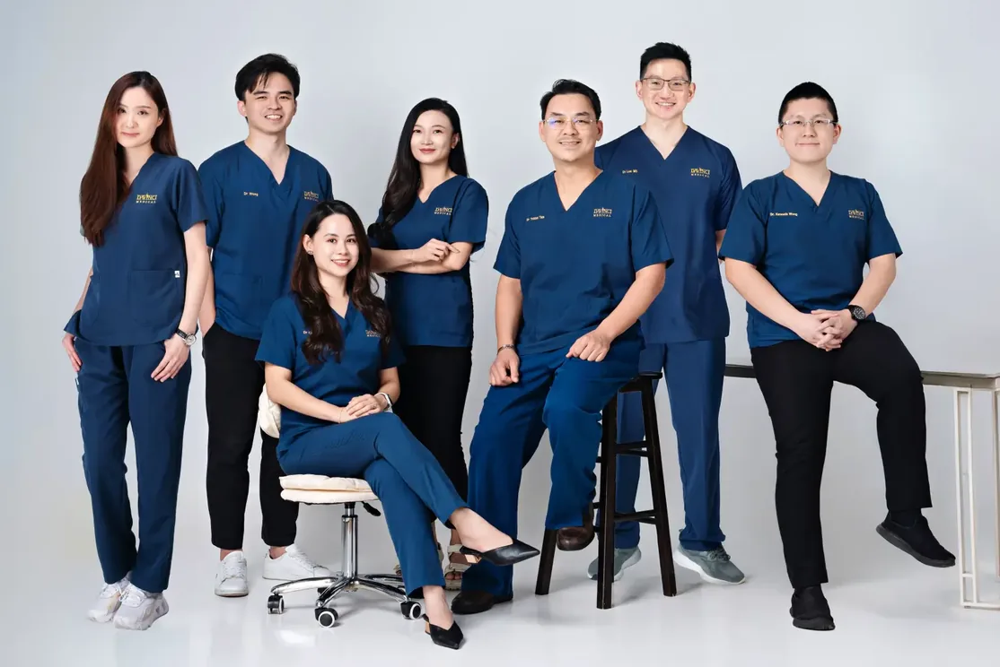
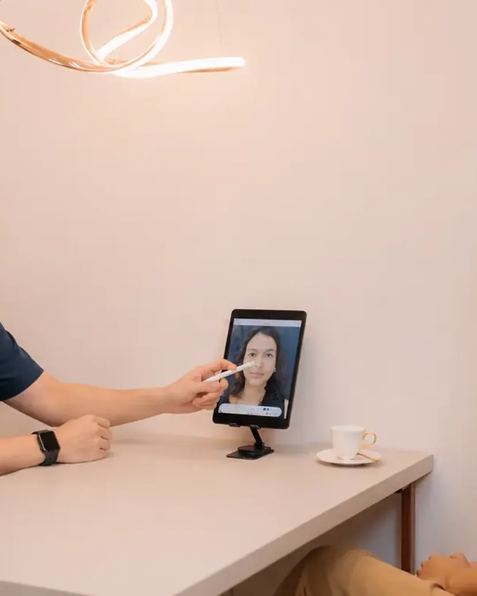
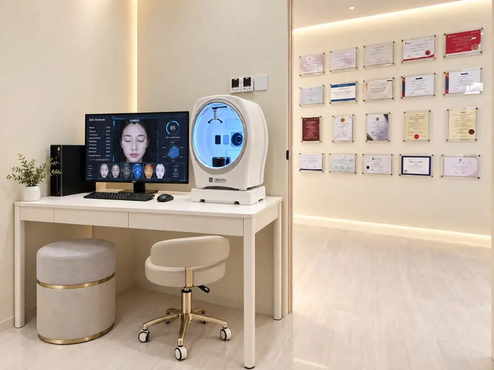

Scroll to discover
Da Vinci Clinic’s original branch since 2006, inside The Boulevard Offices at Mid Valley City. Led by founder Dr. Tristan Tan.

Our clinics
Mid Valley
Mon–Fri 10am–7pm · Sat–Sun 10am–5.30pm
Visit
Visit Da Vinci Clinic Mid Valley
Address
13-2, The Boulevard Offices, Lingkaran Syed Putra, Mid Valley City, 59200 Kuala Lumpur
Opening hours
Monday to Friday 10:00am to 7:00pm
Saturday and Sunday 10:00am to 5:30pm
Call or WhatsApp
Landline +603-2702 2618
WhatsApp +6019-323 7262
Doctors at this branch
Dr. Tristan Tan, Dr. Ho Shuyan, Dr. Lee Mao Sheng
4.8★ on Google from 233 reviews for this branch.
Take a look inside
Clinic environment
A calm, private space designed around the consultation.

Consultation
Treatment

Skin analysis
Doctors at Mid Valley
Tap a doctor to read their credentials.
What our patients say about us
Candy Law · Google review, Mid Valley“I love Da Vinci clinic. Beside the friendly environment, the most important is they have many different types of pico laser with FDA approved. So far price is good. Dr very experienced!”
faiz C · Google review, Mid Valley“Dr Tan listens to his patients and recommends what’s best for them, and the staff are all very friendly. Thank you!”
Janet Quah · Google review, Mid Valley“I have done 3 procedures at Da Vinci over the last few years and I’m very happy with the results. The doctors are very professional, highly skilled, caring and very people-oriented.”
Joyce Chong · Google review, Mid Valley“Dr. Tan took the time to address all of my concerns and answer my questions, making me feel confident in the treatment. The level of care and expertise surpassed my expectations.”
1 of 4
Real Google reviews from patients of our Mid Valley clinic, quoted as written.
Questions
Questions about the Mid Valley clinic
The Boulevard Offices has its own parking and connects to Mid Valley Megamall.
Dr. Tristan Tan, Dr. Ho Shuyan and Dr. Lee Mao Sheng practise here; confirm availability when booking.
Booking ahead is best. WhatsApp +6019-323 7262.
Yes, Mid Valley is the clinic’s Ultherapy Prime base; availability is confirmed at booking.

Mastering the art of science
Book at Mid Valley
WhatsApp +6019-323 7262 or use the form. Open seven days a week.
Book a consultation